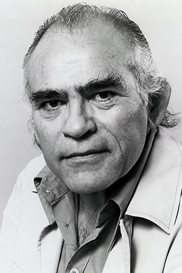
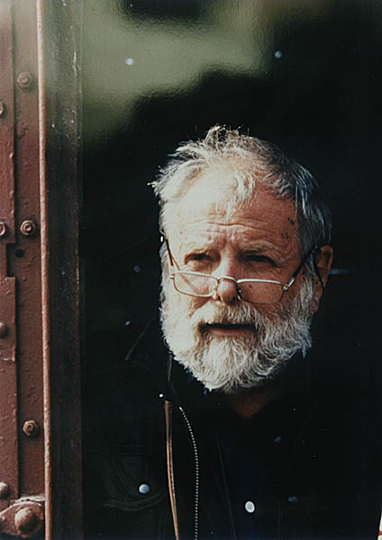
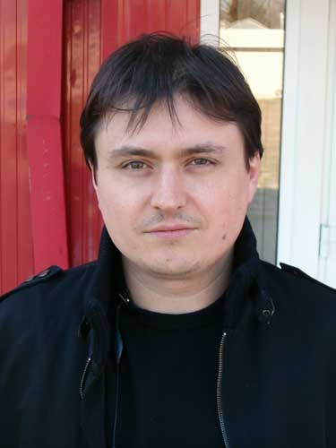
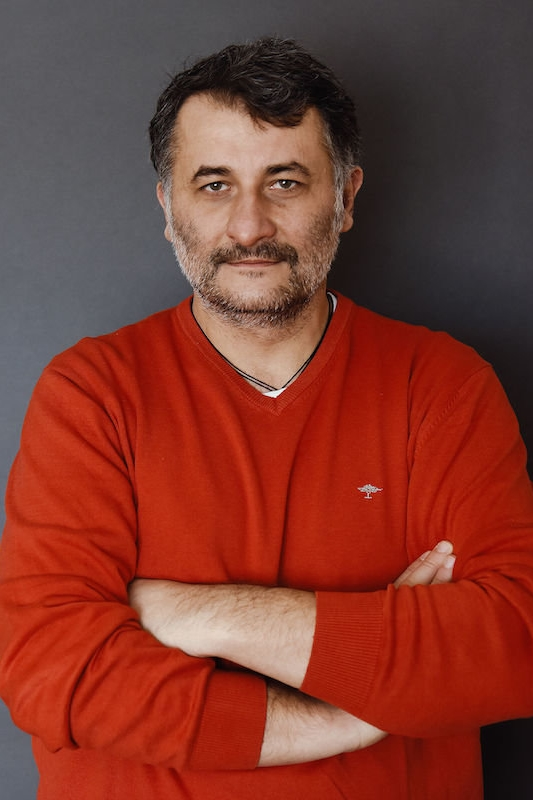
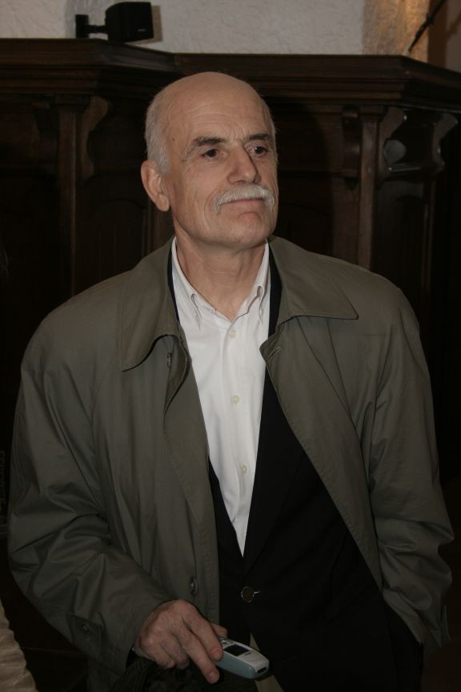
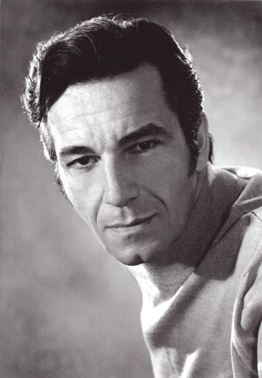
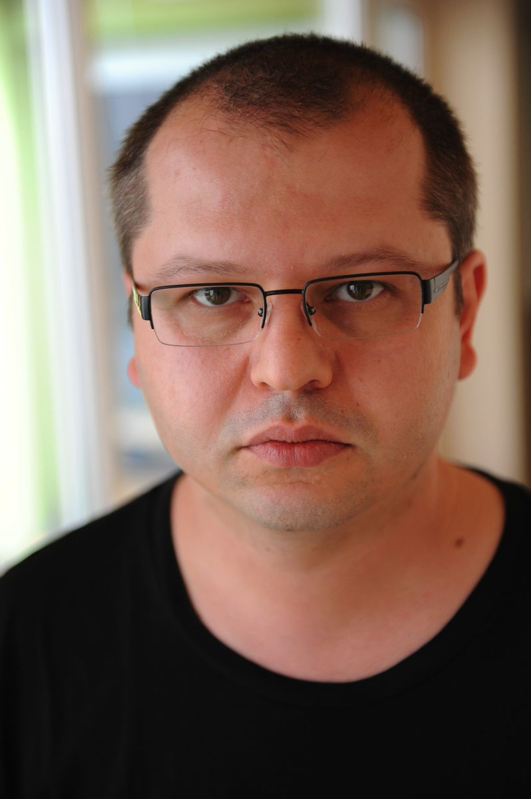
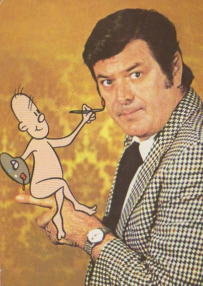

Regizori

Liviu Ciulei
9.2
Liviu Ciulei (Ioan Liviu, n. 7 iulie 1923, București, România – d. 25 octombrie 2011, München, Germania) a fost regizor,
actor, scenograf, arhitect și profesor universitar român. A fost artist emerit (ante 1965).
A studiat teatrul la Conservatorul Regal de Muzică și Teatru din București (1946),
apoi arhitectura (1949).
A debutat ca actor în 1945, la Teatrul Mic în piesa Încătușarea, după piesa "Animal Kingdom" scrisă de Philip Barry; ulterior s-a alăturat echipei Teatrului Municipal din București, (mai târziu numit Teatrul "Bulandra"), unde a debutat ca regizor în 1957, punând în scenă Omul care aduce ploaia de Richard Nash.
În 1961 a devenit celebru pentru o punere în scenă total originală a piesei "Cum vă place" a lui Shakespeare. A mai montat, printre altele: Opera de trei parale (Bertolt Brecht), O scrisoare pierdută (Ion Luca Caragiale), Azilul de noapte (Maxim Gorki), Leonce și Lena (Georg Büchner), Elisabeta I (Paul Foster).
A debutat ca actor în 1945, la Teatrul Mic în piesa Încătușarea, după piesa "Animal Kingdom" scrisă de Philip Barry; ulterior s-a alăturat echipei Teatrului Municipal din București, (mai târziu numit Teatrul "Bulandra"), unde a debutat ca regizor în 1957, punând în scenă Omul care aduce ploaia de Richard Nash.
În 1961 a devenit celebru pentru o punere în scenă total originală a piesei "Cum vă place" a lui Shakespeare. A mai montat, printre altele: Opera de trei parale (Bertolt Brecht), O scrisoare pierdută (Ion Luca Caragiale), Azilul de noapte (Maxim Gorki), Leonce și Lena (Georg Büchner), Elisabeta I (Paul Foster).

Lucian Pintilie
6.3
Lucian Pintilie (n. 9 noiembrie 1933, Tarutino, România – d. 16 mai 2018, București, România) a fost un regizor de teatru,
operă și film român.
Filmele și montările sale din România au provocat mari controverse astfel încât a fost invitat de regimul comunist să emigreze.
Filmele și montările sale din România au provocat mari controverse astfel încât a fost invitat de regimul comunist să emigreze.

Cristian Mungiu
7.9
Cristian Mungiu (n. 27 aprilie 1968, Iași) este un regizor, producător și scenarist de film român contemporan.
În anul 1998 a absolvit cursurile Academiei de Teatru și Film din București, contribuind apoi în calitate de regizor secund la filme cunoscute precum Le Capitaine Conan (1996, regia Bertrand Tavernier) și Train de Vie (1998, regia Radu Mihăileanu).
Filmul 4 luni, 3 săptămâni și 2 zile (2007) l-a făcut celebru pe regizorul Cristian Mungiu, prin selectarea sa de către juriul Festivalului de Film de la Cannes.
În anul 1998 a absolvit cursurile Academiei de Teatru și Film din București, contribuind apoi în calitate de regizor secund la filme cunoscute precum Le Capitaine Conan (1996, regia Bertrand Tavernier) și Train de Vie (1998, regia Radu Mihăileanu).
Filmul 4 luni, 3 săptămâni și 2 zile (2007) l-a făcut celebru pe regizorul Cristian Mungiu, prin selectarea sa de către juriul Festivalului de Film de la Cannes.

Cristi Puiu
6.3
Cristi Puiu (n. 3 aprilie 1967, București) este un regizor și scenarist român contemporan.
A debutat ca regizor în 2001 cu filmul Marfa și banii, film care a obținut mai multe premii internaționale. Unii critici de film consideră că acesta este filmul care a inaugurat noul val românesc în cinematografie.
A debutat ca regizor în 2001 cu filmul Marfa și banii, film care a obținut mai multe premii internaționale. Unii critici de film consideră că acesta este filmul care a inaugurat noul val românesc în cinematografie.

Stere Gulea
6.6
Stere Gulea (n. 2 august 1943, com. Mihail Kogălniceanu, județul Constanța) este un regizor și scenarist român.
Stere Gulea este fărșerot, dintr-o ramură a aromânilor care vine din Grecia.
A terminat Institutul Pedagogic și Facultatea de Filologie, Constanța și Institutul de Artă Teatrală și Cinematografică „I.L. Caragiale” București, secția „Teatrologie-Filmologie” (1970). După absolvire, a lucrat ca redactor la Studioul Cinematografic București. Între 1990-1996 a fost și decan al Facultății de Cinema din cadrul ATF. A condus Televiziunea Română din poziția de director general interimar, în perioada 1996-1998. A fost profesor de film între 1990-2015 la ATF, iar din 2001 UNATC.
În 2006 a avut loc lansarea DVD-ul cu filmul Moromeții, eveniment ce a marcat împlinirea a 20 de ani de la realizarea acestei producții.
A terminat Institutul Pedagogic și Facultatea de Filologie, Constanța și Institutul de Artă Teatrală și Cinematografică „I.L. Caragiale” București, secția „Teatrologie-Filmologie” (1970). După absolvire, a lucrat ca redactor la Studioul Cinematografic București. Între 1990-1996 a fost și decan al Facultății de Cinema din cadrul ATF. A condus Televiziunea Română din poziția de director general interimar, în perioada 1996-1998. A fost profesor de film între 1990-2015 la ATF, iar din 2001 UNATC.
În 2006 a avut loc lansarea DVD-ul cu filmul Moromeții, eveniment ce a marcat împlinirea a 20 de ani de la realizarea acestei producții.

Sergiu Nicolaescu
8.1
Sergiu Florin Nicolaescu[1] (n. 13 aprilie 1930, Târgu Jiu, România – d. 3 ianuarie 2013, București, România[2]) a fost un regizor,
scenarist, actor și politician român. Este de departe cel mai prolific și mai vizionat regizor român din toate timpurile:
54 filme, plus 27 coproducții și peste 1 miliard de spectatori (majoritatea din China și Rusia, dar și 130 milioane de spectatori din
România).
Sergiu Nicolaescu a debutat în filmele de lung metraj cu filmul Dacii (1967). A urmat megaproducția Mihai Viteazul (1971), precum și o serie de filme polițiste centrate în jurul personajului fictiv Comisarul Moldovan. Nicolaescu a interpretat de asemenea rolul ilegalistului comunist Andrei în serialul de propagandă Pistruiatul (1973).
Sergiu Nicolaescu a debutat în filmele de lung metraj cu filmul Dacii (1967). A urmat megaproducția Mihai Viteazul (1971), precum și o serie de filme polițiste centrate în jurul personajului fictiv Comisarul Moldovan. Nicolaescu a interpretat de asemenea rolul ilegalistului comunist Andrei în serialul de propagandă Pistruiatul (1973).

Corneliu Porumboiu
8.1
Corneliu Porumboiu (n. 14 septembrie 1975, Vaslui) este un regizor, scenarist și producător român contemporan.

Ion Popescu-Gopo
8.0
Ion Popescu-Gopo (n. 1 mai 1923,București, România – d. 29 noiembrie 1989, București, România) a fost un artist plastic român,
creatorul a nenumărate filme de desen animat în care personajul principal era „omulețul lui Gopo”, o creație proprie care l-a făcut
celebru și i-a câștigat câteva premii naționale și internaționale, actor, editor de film, scenarist și regizor de film.
Gopo s-a impus, prin creațiile sale artistice, ca o mare personalitate a cinematografiei românești, câștigând, în 1957, premiul "Palme d'or" la Festivalul Internațional de Film de la Cannes, Franța, cu filmul de scurt-metraj Scurtă istorie. A primit titlul de Artist Emerit (anterior anului 1962).
Pseudonimul său de Gopo provine de la numele de familie ale părinților săi, numele de fată al mamei sale, Gorenco, și numele tatălui, Popescu.
Gopo s-a impus, prin creațiile sale artistice, ca o mare personalitate a cinematografiei românești, câștigând, în 1957, premiul "Palme d'or" la Festivalul Internațional de Film de la Cannes, Franța, cu filmul de scurt-metraj Scurtă istorie. A primit titlul de Artist Emerit (anterior anului 1962).
Pseudonimul său de Gopo provine de la numele de familie ale părinților săi, numele de fată al mamei sale, Gorenco, și numele tatălui, Popescu.